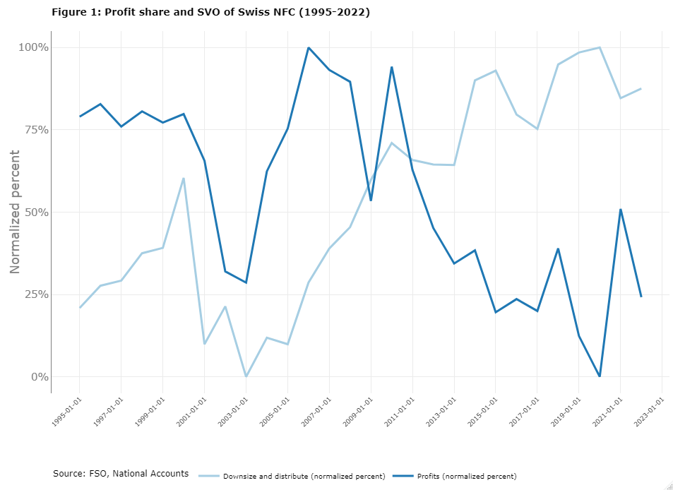

The Swiss economy has long been regarded as impervious to economic turmoil, lauded for its prosperity, robust performance, and macroeconomic stability1. Many view it as a resilient economic structure capable of withstanding any challenge. Amid such perceptions, few dare to suggest that it is in a state of disrepair, relegating critical analysis to the realm of the anecdotal and the improbable.
Contrary to this simplistic viewpoint, this article aims to demonstrate the susceptibility of the Swiss economy to the structural economic changes that have emerged in recent decades. Specifically, it focuses on the impact of financialization on the profit and investment dynamics of non-financial corporations. In this context, financialization refers to the increasing influence of shareholders in corporate governance and its complex financial implications2. One particular contradiction highlighted in the literature is the paradox of declining investment alongside increasing profits, commonly known as the investment-profit puzzle3.
While this puzzle has been observed in several countries4, it has received minimal attention in Switzerland. Therefore, this article aims to examine the relationship between investment and profit within the Swiss context, beginning with a concise overview of the relevant literature. It subsequently delves into illustrating the profit-investment interconnection in Switzerland, ultimately offering insights into the sustainability of these dynamics.
While financialization may refer to a new accumulation regime or the heightened influence of finance in everyday life5, numerous studies have focused on its implications at the corporate level. In this corporate dimension, financialization specifically alludes to the emergence of shareholder value orientation (SVO) in the 1980s in the United States, which amplified the power of shareholders in corporate governance6. The literature emphasizes the financial consequences of this ascendant shareholder influence, particularly the shift from retain and reinvest to downsize and distribute7. In addition to the impact on headcount, these studies underscore the altered utilization of profits, with less being channeled into investments and more being distributed among shareholders8.
While corporate financialization predominantly features at the microeconomic level, it has been employed in several studies to elucidate macroeconomic dynamics. Particularly, it has been invoked to explain the disparity between profits and investment at the macroeconomic level. Drawing from Kalecki’s profit equation9, macroeconomic profits heavily rely on macroeconomic investment. Understanding this dependency necessitates a brief examination of this equation.
Using a simplified framework where capitalists and workers are the primary agents, and with negligible government spending and consumption equating to wages, Kalecki’s equation can be expressed as follows10. Factoring in the absence of management and raw material purchases, the macroeconomic profits (Π) of corporations are the difference between their sales (SA) and total costs (TC). In this simplified equation (1), profit equals the disparity between prices (p) multiplied by quantities (Q) and wages paid (W):
Π = 𝑆𝐴 − 𝑇𝐶 = 𝑝𝑄 − 𝑊 (1)
As prices multiplied by quantities correspond to aggregate demand, and with no public spending, profits can be expressed as the sum of consumption (C) and investment (I) - wages paid, as outlined in equation (2):
Π = 𝑝𝑄 − 𝑊 = (𝐶 + 𝐼) − 𝑊 (2)
However, while consumption equals wages (C=W) in a model where workers spend what they earn, profits are equivalent to investment, as indicated in equation (3). Introducing a causal relationship where investment drives profits renders Kalecki’s argument even more compelling: profits without investment are simply unattainable.
Π = 𝐼 (3)
Despite the relevance of this demonstration, Kalecki’s profit equation faces significant challenges in the era of financialization. Numerous studies highlight a profound paradox: despite the decline in investments under SVO pressure, profits continue to surge11. To elucidate this paradox of profits without investment, some studies have been compelled to consider other explanatory variables, such as globalization and monopolization12.
Before examining the profit-investment nexus within the Swiss context, it is crucial to briefly outline our methodology. Non-financial corporations’ profits will be evaluated in terms of gross operating surplus, a metric that not only indicates profitability in relation to gross value added at the macroeconomic level13 but also enables an examination of how profits are allocated. Specifically, it allows for an assessment of the proportion of profits distributed to shareholders and creditors versus those reinvested in productive capital14. Investment will be assessed in terms of gross capital formation, representing investment in productive capital15. Moreover, financialization will be evaluated based on shareholder payments relative to investment, capturing the essence of SVO and its downsize and distribute principle at the macroeconomic level16. All data is drawn from the national accounts published by the Federal Statistical Office of Switzerland (FSO). However, the measurements of profitability, profit allocation, and financialization are the result of personal calculations for which the author of this article bears sole responsibility.
Figure 1 below depicts the profit-investment nexus in Switzerland amid the context of financialization. It illustrates the consistent increase in downsize and distribute by Swiss non-financial corporations compared to the decline in their profits between 1995 and 2022. With the exception of the late 1990s, dividends paid to shareholders have outpaced productive investment, while profit share witnessed a significant decline, notably between 2005 and 2020. Contrary to prevalant notions concerning its economy, Switzerland has undergone a dramatic transformation. Swiss non-financial corporations have distributed more than they have invested, leading to a decrease in their capacity to generate profits. By allocating a greater share of their profits to shareholders at the expense of investment, companies are endangering their long-term growth, aligning with Kalecki’s profit framework.

To bolster our argument, Figure 2 illustrates the trend of profits for Swiss non-financial corporations between 1995 and 2022. It demonstrates that while the share of profits going to creditors has declined and the share going to investors has remained relatively stable, the share going to shareholders has experienced a sharp rise. Since the advent of financialization Mark II in the year 200017, profits intended for shareholders have, on average, grown 2.84 times faster than those allocated for investment. This illustration serves as a secondary validation. With the ascent of SVO, the balance sheets of Swiss non-financial corporations have become increasingly precarious. Since 2014, more than 100% of profits have been expended, a phenomenon explicable by two dynamics: either corporate savings leading to the expenditure of more profits than exist, or increased corporate borrowing. In either scenario, this SVO pressure is not sustainable in the medium term. In the current environment of high inflation and increased interest rates, Swiss non-financial corporations are confronted with the decision of whether to curtail shareholder payouts or productive investment.
In conclusion, it is essential to acknowledge that this article has not captured all the factors contributing to the decline in investment and profits. For instance, globalization may explain a potential shift of productive investments to third countries, while the monopolization of US technological firms could adversely impact the profit generation of Swiss non-financial corporations.
Despite these limitations, this article delivers a critical lesson: contrary to the prevailing emphasis on Switzerland’s economic success and stability, it highlights a significant failure within the context of financialization. The profits of non-financial corporations have diminished as distribution to shareholders is prioritized over investment. Moreover, since 2014, this transformation has posed a notable challenge, leading to a contraction of corporate balance sheets.
Beyond its importance in understanding the contemporary Swiss economy, this article contributes more broadly to the literature concerning the investment-profit puzzle. Indeed, it shows that unlike many national contexts, Switzerland does not have a puzzle. Continuing Kalecki’s profit equation, the declining macroeconomic investment leads to declining macroeconomic profits. Switzerland is therefore not faced with profits without investment, but rather with no profits without investment.
For a review see Mach, A., & Trampusch, C. (2011). The Swiss political economy in comparative perspective. Switzerland in Europe. Continuity and change in the Swiss political economy, 11-26.↩︎
Lazonick, W., & O’sullivan, M. (2000). Maximizing shareholder value: a new ideology for corporate governance. Economy and society, 29(1), 13-35.↩︎
Stockhammer, E. (2005). Shareholder value orientation and the investment-profit puzzle. Journal of Post Keynesian Economics, 28(2), 193-215; Cordonnier, L. (2006). Le profit sans l’accumulation: la recette du capitalisme gouverné par la finance. Innovations, (1), 79-108; Durand, C., & Gueuder, M. (2018). The profit–investment nexus in an era of financialisation, globalisation and monopolisation: A profit-centred perspective. Review of political economy, 30(2), 126-153; Rabinovich, J. (2021). Financialisation and the ’supply-side’face of the investment-profit puzzle. Journal of Post Keynesian Economics, 44(3), 434-462.↩︎
Mostly the OECD countries. See for example, Stockhammer, E. (2005) and Durand, C., & Gueuder, M. (2018).↩︎
For a broad definition, see Van der Zwan, N. (2014). Making sense of financialization. Socio-economic review, 12(1), 99-129.↩︎
Lazonick-O’Sullivan (2000).↩︎
ibidem.↩︎
For a broad review see Auvray, T., Dallery, T., & Rigot, S. (2016). L’entreprise liquidée: la finance contre l’investissement.↩︎
Kalecki, M. (1969). Theory of Economic Dynamics . New York: Augustus M. Kelley. (The original edition was published in 1952.)↩︎
This simplified presentation of Kalecki’s equation is mainly inspired by Auvray and al (2016).↩︎
Stockhammer, E. (2005); Cordonnier, L. (2006); Durand, C., & Gueuder, M. (2018); Rabinovich, J. (2021).↩︎
Durand, C., & Gueuder, M. (2018); Auvray, T., Durand, C., Rabinovich, J., & Rikap, C. (2021). Corporate financialization’s conservation and transformation: from Mark I to Mark II. Review of Evolutionary Political Economy, 2, 431-457.↩︎
For an example, see Stockhammer, E. (2005).↩︎
For an example see Auvray and a.l (2021).↩︎
For an example, see Stockhammer, E. (2005); Cordonnier, L. (2006); Durand, C., & Gueuder, M. (2018); Rabinovich, J. (2021); Auvray and al (2021↩︎
For an example, see Botte, F., Cordonnier, L., Dallery, T., Duwicquet, V., Melmiès, J., & Van De Velde, F. (2017). Le coût du capital: entre pertes et détournement de richesses (Research dissertation, Université Lille 1-Sciences et Technologies; Université du littoral côte d’Opale; Clersé).↩︎
Auvray and al (2021).↩︎